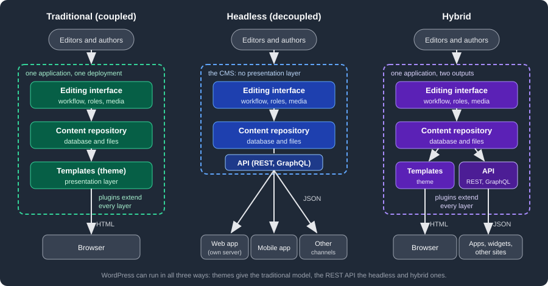

CMS Overview
|
This content was generated with the assistance of AI and should be verified against the official documentation before being relied on in production. |
This page holds the ideas that every product in the CMS section shares: what a CMS is made of, how traditional, headless and hybrid architectures differ, how open source and SaaS products compare, and when a framework is the better tool. The CMS Comparison applies them to sixteen systems.
What a CMS is made of
Every CMS, whatever its language or licence, combines five parts. Knowing them makes it easier to compare products and to see which part a given problem belongs to.
| Part | What it does |
|---|---|
Content model |
The types of content the site holds and the fields of each one: a blog post has a title, a body, an author and a publication date; a book in a catalogue may add an ISBN, a page count and a series. Products differ in how freely the model can be extended. WordPress starts with posts and pages and adds custom post types, taxonomies and metadata; other systems define every type as a schema from the start. |
Editorial workflow |
The life of a piece of content from draft to publication: saving drafts, revisions, review, scheduling a future
publication date, unpublishing and trashing. In WordPress this is expressed as post statuses such as |
Users, roles and permissions |
Who may do what. A contributor writes but cannot publish, an editor publishes anyone’s content, an administrator changes the site itself. WordPress models this with roles made of individual capabilities, which plugins can extend. |
Presentation |
How stored content becomes a page, a feed or an API response: templates, themes, layouts and design settings. In a traditional CMS this layer is part of the product; in a headless CMS it is a separate application. |
Extensions |
The way third parties add features without changing the core: plugins, modules or apps, usually wired in through events or hooks. A large extension ecosystem is one of the main reasons organisations choose a particular CMS, and also one of its main security and maintenance risks, because every extension is code that runs with the site’s privileges. |
Around these five parts sit the services most CMSs also provide: a media library, search, multilingual content, revisions and auditing, caching, import and export, and an administration interface for site settings.
Traditional, headless and hybrid CMSs
The main architectural choice is where the presentation layer lives.

- Traditional (coupled) CMS
-
The editing interface, the content repository and the templates are one application on one server. A request for a page runs the CMS, which loads the content and renders HTML with the active theme. It is the simplest model to host and the one where editors see most precisely what readers will see (previews, a visual site editor, design settings that apply immediately). Its limits appear when the same content has to feed a mobile app or several sites, or when the front-end team wants a JavaScript framework the CMS’s template language does not support.
- Headless (decoupled) CMS
-
The CMS keeps the content model, the editorial workflow and the users, but renders no public pages. It exposes content through an API, usually REST or GraphQL, and one or more separate front ends (a web application in Next.js or another framework, a mobile app, digital signage, an e-mail generator) fetch it and render it themselves. Content is reused across channels and the front end is free to use any stack, at the cost of running and securing at least two applications, re-implementing what the CMS’s theme gave for free (routing, previews, menus, SEO tags, sitemaps, forms), and keeping the API and the front end’s expectations in sync. Products designed only for this model include Strapi and several SaaS services.
- Hybrid CMS
-
One application does both: it renders its own pages for the main site and exposes the same content through an API for apps, widgets or a second front end. Most established open-source CMSs now work this way. WordPress has rendered pages through themes since its early versions and has shipped a REST API in core since version 4.7 (2016); Drupal ships a JSON:API module in core and Joomla a Web Services API. A hybrid CMS lets a team start traditional and move parts of the site to a separate front end later, page by page.
The distinction is about deployment, not about a product: the same WordPress installation is traditional when visitors read the theme’s pages, headless when only an API client reads it, and hybrid when both happen. The WordPress sub-section shows all three with one running example.
The two sub-sections added after WordPress and Webflow show the same split in their own products. In Drupal the same installation renders pages through Twig themes and serves JSON:API, REST and GraphQL, so the decoupled Next.js front end of its running example reads the content the theme also renders. In Joomla the site renders pages through templates and modules, while the Web Services API with token authentication feeds a headless front end.
What a headless API returns
In a headless or hybrid deployment, the front end asks the CMS for structured data instead of HTML. The request below
asks the WordPress REST API of a fictitious publisher’s site for its two latest posts and limits the response to four
fields with the _fields global parameter.
GET /wp-json/wp/v2/posts?per_page=2&_fields=id,slug,link,title HTTP/1.1
Host: lumenpress.example
Accept: application/json[
{
"id": 42,
"slug": "autumn-catalogue-announced",
"link": "https://lumenpress.example/autumn-catalogue-announced/",
"title": { "rendered": "Autumn catalogue announced" }
},
{
"id": 39,
"slug": "meet-our-new-editors",
"link": "https://lumenpress.example/meet-our-new-editors/",
"title": { "rendered": "Meet our new editors" }
}
]The response also carries the X-WP-Total and X-WP-TotalPages headers, which a front end uses to build pagination;
per_page defaults to 10 and is capped at 100. The title arrives as rendered, that is, already filtered by the CMS
(the same filters that run when a theme prints it), so a front end that injects it into its own markup must treat it as
HTML produced by the CMS. These details are typical of headless work: the front end has to know the CMS’s data
conventions as well as its own framework.
Open source and SaaS
CMSs are also distributed in two different ways, and the choice affects cost, control and who is responsible for security.
| Self-hosted open source | Software as a service (SaaS) | |
|---|---|---|
Examples |
WordPress (WordPress.org software), Drupal, Joomla, Statamic (Laravel-based, with a free and a paid edition), Strapi |
Hosted CMS products such as Webflow, and hosted editions of open-source CMSs, such as WordPress.com, which runs the WordPress software |
Licence and cost |
Free to use and modify under the project’s licence (WordPress, Drupal and Joomla use the GNU GPL); costs are hosting, development and maintenance |
Subscription, often priced by users, content entries, API calls or traffic |
Hosting and updates |
The owner installs, updates, backs up and secures the application, the server and every extension |
The vendor runs the platform and applies core updates; the owner manages content, users and configuration |
Customisation |
Unlimited: any theme, plugin or code change, subject to the licence |
Limited to what the vendor exposes (apps, webhooks, APIs, plan-dependent plugin support) |
Data and exit |
The database and files are the owner’s; moving host is a copy |
Export depends on the vendor’s tools and API |
Main risk |
Unpatched core or extensions, weak hosting |
Vendor pricing, limits and lock-in |
Drupal and Joomla are in the first column: both are GPL software that the owner installs, updates and secures, with extensions (Drupal modules, Joomla extensions) that are distributed separately from core and need the same patching discipline as core. The choice between them and WordPress is therefore a choice of content model, administration interface and ecosystem, not of hosting model; the CMS Comparison gives dated metrics for all three.
Self-hosted does not have to mean self-managed: managed hosting companies run open-source CMSs and take over updates, backups and caching, which places them between the two columns.
When a CMS is the right tool, and when a framework is
A CMS is usually the right starting point when:
-
the product is content: articles, pages, a catalogue, documentation for the public, events, a news site
-
non-developers must publish daily without a release cycle, with drafts, review, scheduling and revisions
-
the features needed (SEO, forms, media handling, multilingual content, newsletters) exist as maintained extensions
-
the budget favours configuring and extending a mature product over building and owning one
A web framework is usually the better choice when:
-
the product is an application whose core is business logic, not content: a booking engine, a banking back office, a SaaS product with its own data model
-
most data does not fit the CMS’s content model, and would end up stored awkwardly in generic tables
-
the team needs full control of routing, data access, testing and deployment, and the CMS’s conventions would get in the way more than they help
-
the application serves an API to many clients and has no editors at all
The two are often combined: an application built with a framework, plus a CMS (often headless) for its marketing site, blog or help pages. Some CMSs are themselves built on a framework, such as Statamic on Laravel, so the framework documentation applies to their custom code.
For the framework side of the decision, see PHP and Laravel (the PHP framework closest to WordPress’s language), Web Frameworks Comparison and Backend Frameworks Comparison. Those comparisons leave CMSs out on purpose, because a CMS is a finished application to configure and extend, not a library to build an application from.